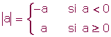

Números reales y radicales. Resumen
Los números irracionales
Un número es irracional si posee infinitas cifras decimales no periódicas, por tanto no se pueden expresar en forma de fracción.
Los números reales
El conjunto formado por los números racionales e irracionales es el conjunto de los números reales, se designa por .
Con los números reales podemos realizar todas las operaciones, excepto la radicación de índice par y radicando negativo y la división por cero.
Los intervalos están determinados por dos números que se llaman extremos. En un intervalo se encuentran todos los números comprendidos entre ambos y también pueden estar los extremos.
Intervalos
Intervalo abierto
(a, b) = {x  / a < x < b}
/ a < x < b}
Intervalo cerrado
[a, b] = {x  / a ≤ x ≤ b}
/ a ≤ x ≤ b}
Intervalo semiabierto por la izquierda
(a, b] = {x  / a < x ≤ b}
/ a < x ≤ b}
Intervalo semiabierto por la derecha
[a, b) = {x  / a ≤ x < b}
/ a ≤ x < b}
Semirrectas
x > a
(a, +∞) = {x  / a < x < +∞}
/ a < x < +∞}
x ≥ a
[a, +∞) = {x  / a ≤ x < +∞}
/ a ≤ x < +∞}
x < a
(-∞, a) = {x  / -∞ < x < a}
/ -∞ < x < a}
x ≤ a
(-∞, a] = {x  / -∞ < x ≤ a}
/ -∞ < x ≤ a}
Valor absoluto

Propiedades
|a| = |−a|
|a · b| = |a| ·|b|
|a + b| ≤ |a| + |b|
Distancia
d(a, b) = |b − a|
Entornos
Se llama entorno de centro a y radio r, y se denota por Er(a) o E(a,r), al intervalo abierto (a-r, a+r).
Er(a) = (a-r, a+r)
Entornos laterales:
Por la izquierda
Er(a-) = (a-r, a)
Por la derecha
Er(a+) = (a, a+r)
Entorno reducido
E r*(a) = { x  (a-r, a+r), x ≠ a}
(a-r, a+r), x ≠ a}
Potencias
1 Con exponente entero
2 Con exponente racional

Propiedades
1 a0 = 1 · 7.an : b n = (a : b) n
2 a1 = a
3 am · a n = am+n
4 am : a n = am - n
5 (am)n=am · n
6 an · b n = (a · b) n
Radicales
Un radical es una expresión de la forma  , en la que n
, en la que n 
 y a
y a  ; con tal que cuando a sea negativo, n ha de ser impar.
; con tal que cuando a sea negativo, n ha de ser impar.
Se puede expresar un radical en forma de potencia:
Radicales equivalentes
Simplificación de radicales
Si existe un número natural que divida al índice y al exponente (o los exponentes) del radicando, se obtiene un radical simplificado.
Reducción de radicales a índice común
1 Hallamos el mínimo común múltiplo de los índices, que será el común índice
2Dividimos el común índice por cada uno de los índices y cada resultado obtenido se multiplica por sus exponentes correspondientes.
Extracción de factores fuera del signo radical
Se descompone el radicando en factores. Si:
Un exponente es menor que el índice, el factor correspondiente se deja en el radicando.
Un exponente es igual al índice, el factor correspondiente sale fuera del radicando.
Un exponente es mayor que el índice, se divide dicho exponente por el índice. El cociente obtenido es el exponente del factor fuera del radicando y el resto es el exponente del factor dentro del radicando.
Introducción de factores dentro del signo radical
Se introducen los factores elevados al índice correspondiente del radical.
Operaciones con radicales
1 Suma de radicales
Solamente pueden sumarse (o restarse) dos radicales cuando son radicales semejantess, es decir, si son radicales con el mismo índice e igual radicando.
2 Producto de radicales
1 Radicales del mismo índice
2 Radicales de distinto índice
Primero se reducen a índice común y luego se multiplican.
3 Cociente de radicales
1 Radicales del mismo índice

2 Radicales de distinto índice
Primero se reducen a índice común y luego se dividen.
4 Potencia de radicales

5 Raíz de un radical

Racionalizar
Consiste en quitar los radicales del denominador, lo que permite facilitar el cálculo de operaciones como la suma de fracciones.
Podemos distinguir tres casos.
1Del tipo
Se multiplica el numerador y el denominador por  .
.
2Del tipo
Se multiplica numerador y denominador por  .
.

3Del tipo , y en general cuando el denominador sea un binomio con al menos un radical.
Se multiplica el numerador y denominador por el conjugado del denominador.